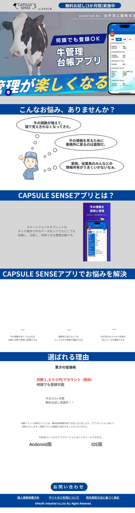
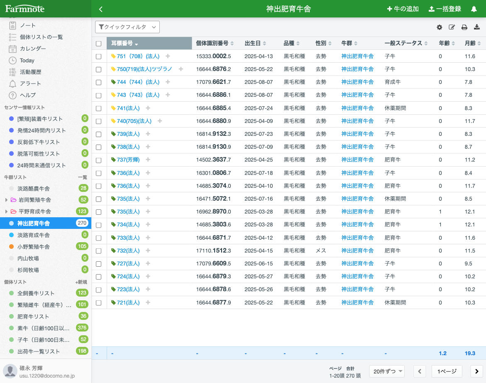
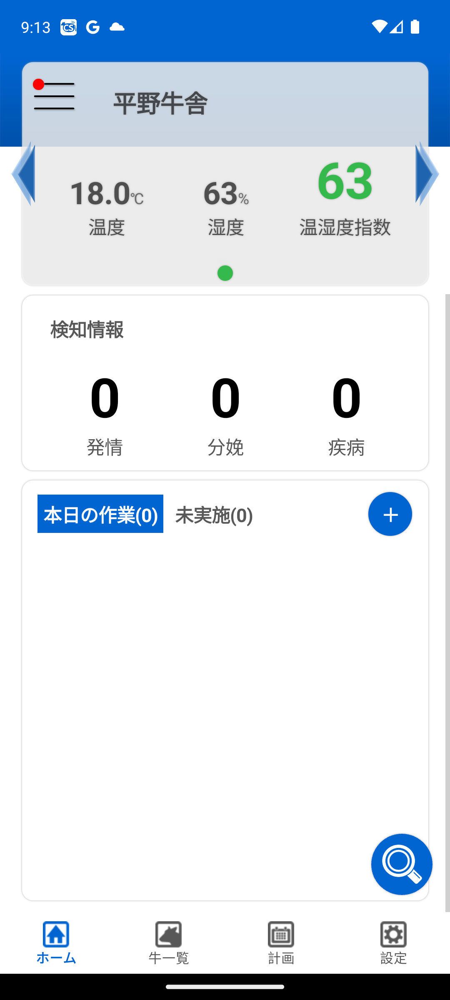
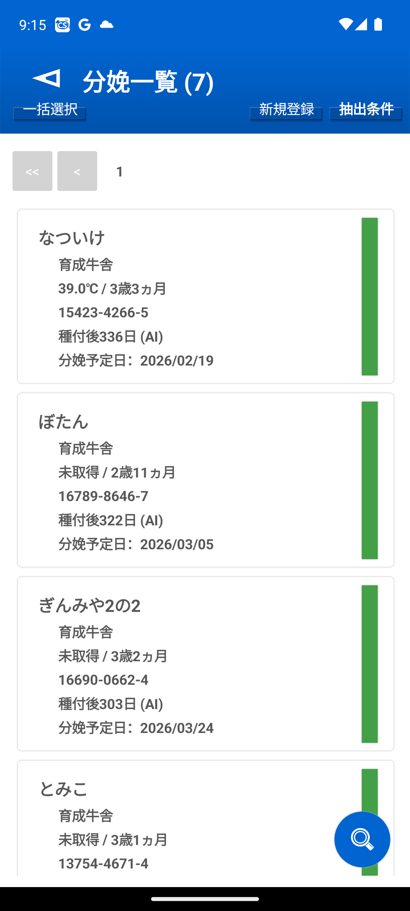
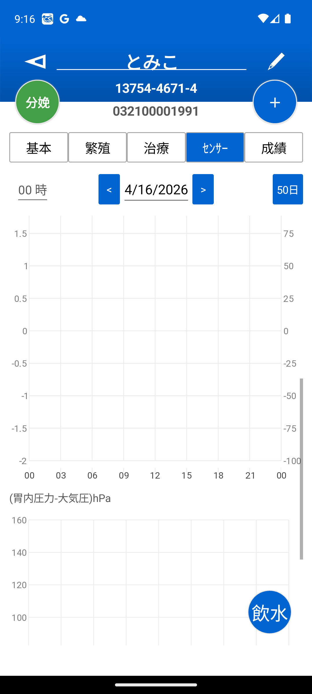
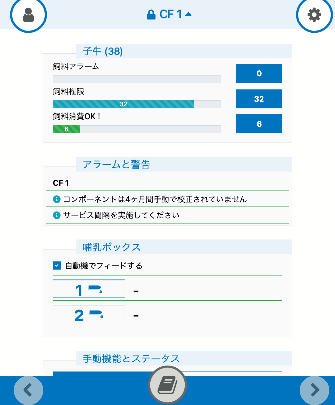
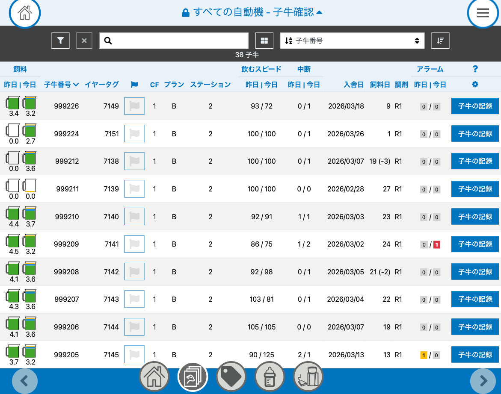
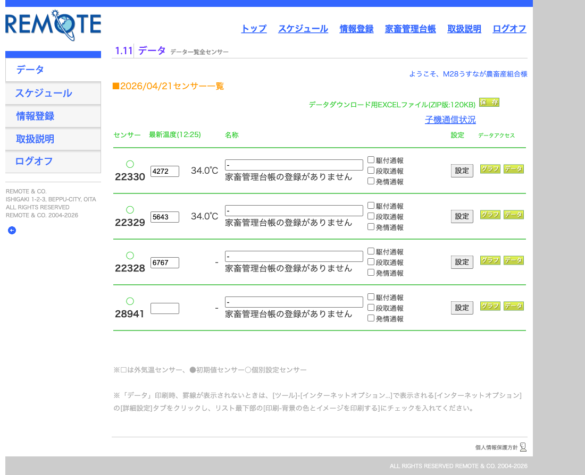
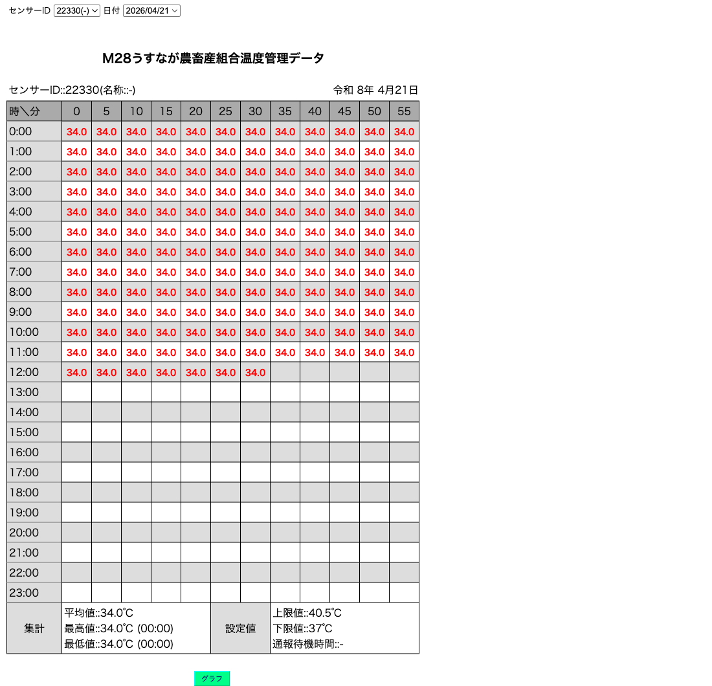
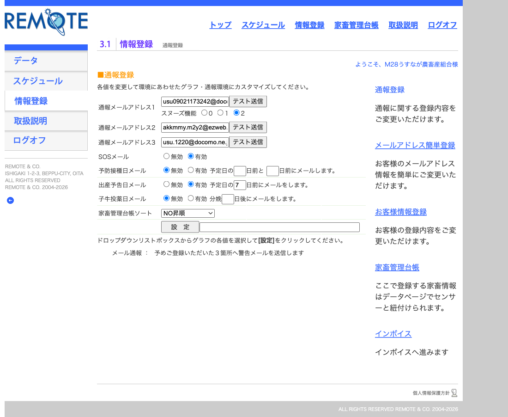

うすながさんへの提案に入る前に、クライアントと業界を深く理解するための説明資料です。牧場DXプロジェクトの前提共有資料として、プロジェクト関係者全員が同じ情報を持てる状態を目指しました。
兵庫県神戸市の但馬牛専門牧場。繁殖〜肥育〜精肉販売〜飲食店までを一貫で運営する 6次産業化した先進的な和牛牧場 です。
兵庫県神戸市西区岩岡町で但馬牛を育てる若き経営者。かつては「牛嫌い」だったが、但馬牛の魅力に引き込まれ、現在は畜産業界の異端児として注目を集めている。
「もう一口食べたくなる牛肉」をコンセプトに、牧場経営から直営精肉店・飲食店まで幅広く展開。
| 拠点 | 頭数 | 主な機能 | エリア |
|---|---|---|---|
| 神出肥育牛舎 | 273頭 | 肥育（最大拠点） | 神戸市西区神出町 |
| 小野繁殖牛舎 | 128頭 | 繁殖 | 小野市or神戸周辺 |
| 平野子牛哺乳 | 63頭 | 哺乳期 | 神戸市西区平野町 |
| 平野子牛（哺乳以外） | 57頭 | 子牛育成 | 神戸市西区平野町 |
| 岩岡繁殖牛舎（本社） | 54頭 | 繁殖 | 神戸市西区岩岡町 |
| 淡路酪農牛舎 | 34頭 | 酪農（ホルスタイン） | 淡路島 |
| 平野繁殖牛舎 | 13頭 | 繁殖（岩岡配下） | 神戸市西区平野町 |
| （牛群未指定） | 18頭 | 移動中・廃用準備中など | - |
| 合計（ダッシュボード値） | 640頭 | 7牛群622頭＋牛群未指定18頭 | - |
主力。神戸ビーフ／純但馬うすなが牛としてブランド展開。受精卵移植（ET）も実施して優良血統牛を増産。
※ 2026-03-27時点は565頭（97.8%）。25日間で約+41頭増。
淡路酪農牛舎で搾乳運営。和牛メインだが酪農部門を拡大中（2026-03-27時点13頭→4/21時点34頭・+21頭）。
単なる生産者ではなく、食べる人までの全体設計をしている珍しい牧場。
| 品質最優先 | 「もう一口食べたくなる牛肉」をコンセプト |
| 働き方改革 | 週休2日制・8:00〜17:00（業界内で超ホワイト） |
| 国産飼料志向 | 100%国産を目標、現在半分以上達成。酒粕・みりん粕・ビール粕を配合 |
| 先進技術導入 | ET（受精卵移植）、DX、SNSマーケティング |
| 挑戦者精神 | 但馬牛ブランド拡大、畜産業界のイメージ刷新 |
うすながさんの悩みを理解するには、肉牛農家全般の日常と業界課題を知る必要があります。
※ 業界平均の肉牛農家像。うすながさん牧場の実際の1日は §10 ヒアリング項目 で確認予定
★ 年間365日稼働、ヘルパー制度で月数日の休みを作る仕組み
※ 業界標準課題。うすながさん牧場の固有の悩みはヒアリング項目
うすなが牧場は、業界の悩みを自分の工夫で突破してきた先進事例です。業界平均と真逆の特徴を持つため、提案は汎用的な牧場向けではなく「うすながさん仕様」に最適化する必要があります。
| 業界平均 | うすなが牧場 | |
|---|---|---|
| 代表年齢 | 67.8歳 | 27歳（正反対） |
| 労働時間 | 重労働・長時間 | 週休2日・8-17時 |
| 事業形態 | 繁殖 or 肥育 専業 | 一貫経営＋ET＋6次産業化 |
| 飼料 | 輸入飼料依存 | 100%国産志向・独自配合 |
| 規模 | 20頭未満が大半 | 640頭（業界大規模層） |
| 品種 | 単一品種が多い | 和牛メイン＋一部酪農 |
Farmnote CSV（2026-03-27）の分娩予定154頭を分析した結果、業界平均の春秋ピークと真逆の「10〜12月ピーク運営」 が判明しました。
働き方改革を掲げてる公開情報から推測すると、DXの第一価値提案は「夜間対応・手間削減」である可能性が高い。
「繁殖率が◯%上がる」より「夜間の見回りが◯時間減る」のほうが刺さると想定。
※ ヒアリングで「一番解決したい課題」を直接確認する必要あり
うすながさんはすでに5つの牧場系ツール（＋監視カメラ）を契約しています。それぞれの機能・役割を整理します。
役割: 全ての牛の 台帳管理。個体ID・耳標番号・血統・繁殖履歴・健康記録を一元管理する基盤ツール。
個体ID / 耳標番号 / 個体識別番号 / 牛群 / 出生日 / 月齢 / 品種 / 性別 / 一般ステータス / 産次 / 繁殖ステータス / 分娩予定日


役割: 牛の胃に入れたカプセルで 体温（10分毎）＋活動量 を生涯計測。発情・分娩予兆・疾病早期発見を総合的にモニタリング。



役割: 子牛専用の管理ツール。哺乳量・投薬履歴・体重・健康状態を細かく記録。


役割: 分娩監視特化の膣内体温センサー。分娩前7日間装着、24時間前予測＋破水検知＋SOS通報の3段構え。
| 通報 | タイミング | 独自性 |
|---|---|---|
| 段取り通報 | 分娩24時間前（体温低下） | カプセルセンスと重複 |
| 🔴 駆付け通報1 | 破水・娩出でセンサー脱出 | 🔴 牛温恵だけ |
| 駆付け通報2 | 予想外脱出（異常） | 同上 |
| SOS通報 | 分娩後の発熱 | カプセルセンスと重複 |
| 発情通報 | 発情初期 | カプセルセンスと重複 |
膣内センサーは破水の水圧＋子牛の通過で物理的に押し出されます。センサー脱出＝破水完了＝分娩進行中を即座に確定できる。他のセンサー（胃内・首）は体温・活動量から推測するしかない。
「そろそろ産まれそう」ではなく「今産まれている」が言える唯一のツールです。



役割: 拠点の様子を 遠隔から目視確認。センサーアラート時に「本当に駆けつける必要があるか」を判断する決め手。
7牛群に分散していると、夜間にアラートが出ても駆けつけに15〜120分かかる。カメラで事前確認できれば 「行くべき時だけ行く」 運用に変わる。
破水アラート→カメラで進行速度・難産兆候を確認→獣医呼ぶか自分で対応か判断
アラートの真偽確認、実際の行動観察
子牛の立ち上がり・初乳給与・母牛の胎盤排出を遠隔確認
夜間の侵入者・害獣の監視
5ツールは完全に独立しているわけではなく、一部機能が重複しています。独自価値（他で代替できないもの） を軸に整理すると、連携設計が明確になります。
| ツール | 🔴 独自価値（他で代替不可） | 重複する機能 |
|---|---|---|
| Farmnote Cloud | 個体台帳・繁殖サイクル管理・ET履歴・640頭の基盤データ | - |
| カプセルセンス | 年間通じた胃内体温＋活動量（全牛ベースライン） | 発情・分娩予兆（牛温恵・Colorと重複） |
| CalfCloud | 子牛専用管理（哺乳・投薬・体重・246頭） | - |
| 牛温恵 | 🔴 破水の物理検知、分娩24h前予測（高精度） | 発情（冗長） |
| 監視カメラ | 視覚情報（姿勢・行動・状況の目視確認） | - |
ここが本資料の核心です。各ツールは単体でも役立ちますが、連携して初めて「1+1＞2」の価値が生まれます。5つの具体的なシナリオで説明します。
※ 以下のシナリオは想定案。実際の運用フロー・ペインポイントはヒアリングで確定します。数値効果は業界標準値ベースの試算で、うすながさん牧場での実効果はヒアリング後に再試算します。
繁忙期（12月）は月22回の夜間分娩。スタッフがほぼ毎晩駆り出される課題を、5ツール連携で「本当に必要な時だけ」に圧縮します。
生後1ヶ月の子牛は最もハイリスク。和牛子牛は1頭60〜100万円の資産。CalfCloud × カプセルセンス で早期発見。
受精卵移植（ET）は発情のタイミングが命。カプセルセンス × Farmnote で高精度な発情検知。
神戸・明石・淡路の3エリア7牛群に分散。Farmnoteの個体ID を軸に全データを統合し、経営者が1画面で全体把握。
精肉店・飲食店まで運営しているからこそ、個体→商品のトレーサビリティで他社と差別化できる。
ここまで説明してきた内容を 1画面にまとめたらどうなるか をHTMLで作成しました。
別ファイル デモ_統合ダッシュボード_v2.html に作成済み。ブラウザで開くと以下が見られます：
業界標準値とFarmnote CSV実データを組み合わせた 机上試算。新規ツール導入不要、既存契約の活性化だけでこの効果が見込めます。
※ 試算値の根拠: 業界の学術研究・他社事例・Farmnote CSV実データの組み合わせ。うすながさん牧場の実効果は、PoC（5〜7月の分娩30頭でのトライアル）で実測してから再提示します。
| 項目 | 年間効果 | 根拠 |
|---|---|---|
| 🕐 夜間対応削減 | 150〜200時間の時間解放 | 年間分娩180-220頭×夜間6割×2-3割削減 |
| 🍼 子牛死亡率改善 | 150〜250万円の損失回避 | 246頭×0.5-1%改善×平均80万円 |
| 🧬 発情発見率向上 | 80〜100万円の空胎日数削減 | 母牛130頭×15日短縮×空胎1日3$ |
| 🗺️ 拠点統合の意思決定価値 | 定量化困難だが大きい | 経営者の時間効率・判断精度UP |
| 合計（見える分） | 300〜450万円 + 年150〜200時間 | 既存契約活性化のROI高 |
「機能より時間、数字より仕組み」 のメッセージング
本資料は仮説段階。うすながさんヒアリングで正確化してから提案に進みます。
※ うすながさんの都合・予算・実装負荷を踏まえて要調整